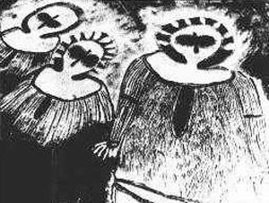

<!--#include virtual="/header.html" -->
<ul>
  <li>
    <figure class="right side">
      <figcaption>Les 3 personnages dessinés il y a 5000 ans sur les parois d'une grotte australienne</figcaption>
      
    </figure>
    3 personnages qui semblent casqués et porteurs de "grosses lunettes", dessinés (ci-contre) sur les parois d'une
    grotte australienne.
  </li>
</ul>
<!--#include virtual="/footer.html" -->
